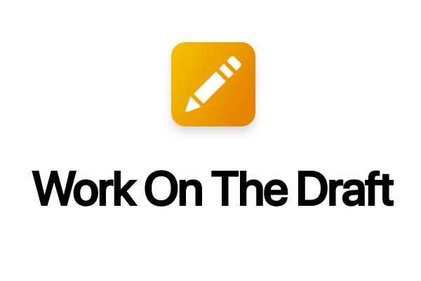
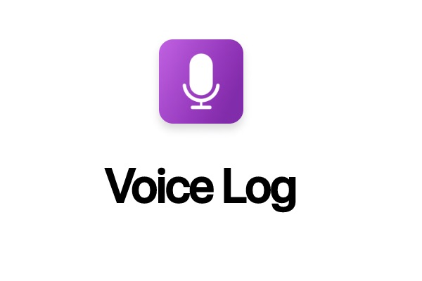
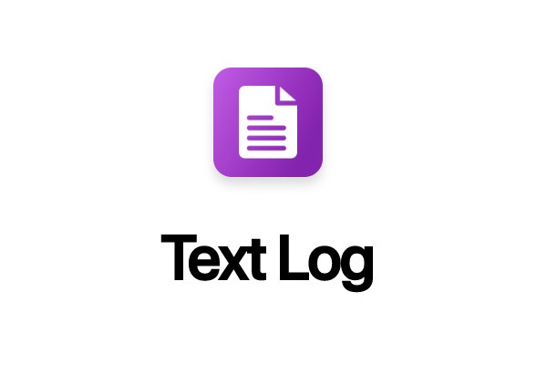
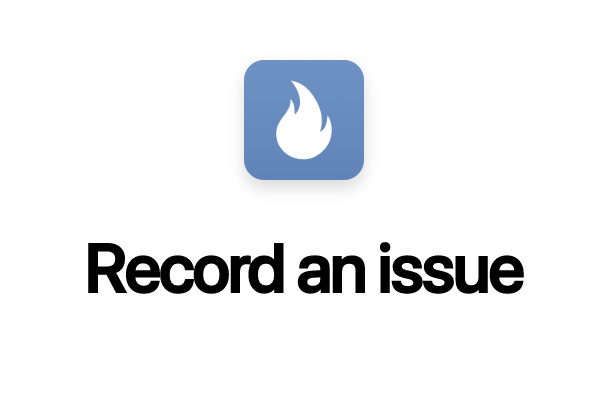

These are some of the Apple Shortcuts I have created. I also have videos on YouTube and a Skillshare course showing how to make them.
Apple Shortcut Gallery
-
 Use through the Share menu to add markup and annotations to items
Get Shortcut -
 Use dictation to create notes associated with individuals for reminders
Get Shortcut -
Quick interface to choose between dictation or written voice logs.
Get Shortcut -
 written voice log entry for reminders.
Get Shortcut -
Easily get your current count of YouTube subscribers.
Get Shortcut -
 Record an issue for follow up later.
Get Shortcut